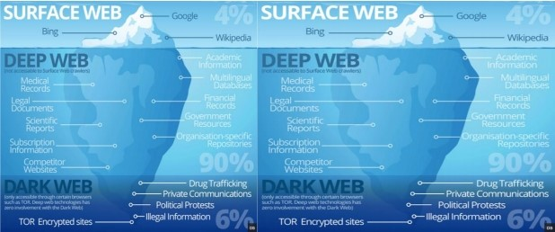

Deep web and dark web are so technical in nature that we came across a lot of confusion as to what they actually mean in our research. More tech-savvy publications generally have a disclaimer when discussing the dark web, pleading with their readers that this is not to be confused with the deep web, which is related, but not at all the same thing. So, what exactly are the dark web and the deep web, and why are technology reporters so wary when using either term? 
Dictionary.com defines deep web as ―the portion of the Internet that is hidden from conventional search engines, as by encryption; the aggregate of unindexed websites
The dark web, on the other hand, is defined as ―the portion of the Internet that is intentionally hidden from search engines, uses masked IP addresses, and is accessible only with a special web browser: part of the deep web.‖ The key takeaway here is that the dark web is part of the deep web.
The dark web and the deep web became increasingly common in the news thanks to the heavily reported Silk Road trial. This particular Silk Road is an online black market that was shut down twice by the FBI between 2013 and 2014. In February 2015, Silk Road‘s founder Ross Ulbricht was convicted of various crimes, including several attempted murders-for-hire. Silk Road ran its operations on the dark web, which makes up a small percentage of the deep web.
What the dark web and the deep web have in common is that they are both hidden from commercial search engines. You cannot access either from Google or Bing. The deep web is a general, catch-all term that includes the dark web, but also includes ―mundane content like registration-required web forums and dynamically-created pages like your Gmail account,‖ according to Andy Greenberg at Wired. That is to say, most of the deep web is irrelevant to the news stories about Silk Road.
When people discuss the seedy underbelly of the Internet where you can buy drugs, weapons, child pornography, murders-for-hire—basically any illicit item or service you could dream up—that‘s the dark web. Greenberg notes that while the deep web is vast and accounts for 90-something percent of the Internet, the dark web likely only accounts for about .01 percent. The dark web, sometimes referred to as Darknet, is accessed by Tor (The Onion Router) or I2P (Invisible Internet Project), which use masked IP addresses to maintain anonymity for users and site owners. This way, people who use the dark web for illegal purposes can‘t be traced.
The dark web isn‘t all illicit deals and seedy undertakings; it‘s used for an array of purposes. Journalists use the dark web to help protect the anonymity of their sources, and others use the dark web simply because they believe strongly in their right to privacy. Max Eddy for PC Magazine reports that ―Tor was originally developed by the US Department of Defense,‖ and while now Tor is a nonprofit run by volunteers, it is funded by the likes of the US government and the National Science Foundation. On Vox, Timothy B. Lee explains: ―Government support for Tor has continued in recent years as part of the State Department‘s internet freedom agenda, which seeks to help people in repressive regimes gain access to information censored by their governments.‖ For instance, Facebook recently launched a version of its site on the dark web to ―make it easier to access the site from countries that restrict the service, such as China and Iran
One common misconception about the dark web and the deep web is that these two terms are interchangeable. This is simply not true. Take, for example, this sentence in Business Insider: ―The Dark (or Deep) Web, which refers to areas of the Internet normally inaccessible to users without special anonymizing software, first came to prominence with the Silk Road trial.‖ While, yes, both the deep and dark web have been featured in news stories about Silk Road, this writer is clearly referring specifically to the dark web, which is just a tiny portion of the deep web where users employ masked IP addresses to conceal their identity.
A similar mistake is made by comedian Hannibal Buress in a Funny or Die spoof of the Webby Awards called ―The Deep Webbys.‖ Awards include ―Most Stolen Identity,‖ ―Leakiest Wiki,‖ and ―The People‘s Choice Award for the Trafficking of the Choicest People.‖ Though his delivery is pristine, this is another example of deep web being confused for dark web. The sorts of illegal activities and documents named in these awards are bought, sold, hosted via the dark web. The ―Deep Webbys‖ is too broad a title; the awards should technically be called the ―Dark Webbys,‖ a distinction that Buress, Funny or Die, and the A.V. Club, which reported on Buress‘ video, missed.
The television shows House of Cards, Orphan Black, and Portlandia all recently had plot lines involving the dark web. Did these shows confuse the terms? In House of Cards, as reporter Lucas Goodwin investigates holes in Frank Underwood‘s story, he knows he needs to dig deeper. His more technically inclined coworker explains the deep web to him: ―96 percent of the Internet isn‘t accessible through standard search engines. Most of its useless, but it‘s where you go to find anything and everything. Child porn, Bitcoin laundering, mail-order narcotics, hackers for hire…‖ While this is technically correct, Kim Zetter from Wired told NPR that this is only partially right: ―there should be a distinction between what‘s called the Deep Web and what are known as Darknet sites.‖ Orphan Black makes out a little better. Cal, a tech-startup-wiz turned reclusive lumbersexual, details his efforts to help Sarah and her daughter, saying ―I followed this person on the Darknet, and I saw them asking the same questions as me.‖ This checks out. The dark web and Darknet refer to the same thing. Portlandia, however, straight-up confuses the terms when the Mayor, in an attempt to purchase fireworks for the 4th of July exclaims, ―Man, this deep web has everything! Guns…drugs…explosives!‖ However, the Mayor is not a technical genius, so we can forgive him for his mistake.
Will deep web start to mean both the deep web and the dark web, with disambiguation only to be achieved by context? This would not be the first time this sort of thing happened in the English language. Decimate used to describe the ancient Roman practice of killing one out of 10 of a group of mutinous soldiers, as to teach a lesson the remaining troops, but now it more generally means ―to destroy a great number or proportion of something.‖ Those very attached to the older sense can become enraged when they hear the newer sense—and what they consider to be the incorrect sense—used. Is deep web destined to decimate‘s fate?
In Garner‘s Modern American Usage, Bryan Garner advises avoiding “skunked terms” like decimate if we don‘t want to distract readers or listeners who happen to have strong biases either way. Is that what we should do here? Perhaps, though deep web and dark web are still young terms; those who currently confuse the two don‘t have any strong biases either way, so these terms are far from skunked. It‘s possible that, as people become more aware of the different entities they describe, confusion will die down. But is this likely? The deep technical nature of these terms might mean that the majority of English speakers remain forever in the dark.
The dark web is the World Wide Web content that exists on darknets, overlay networks that use the Internet but require specific software, configurations, or authorization to access. The dark web forms a small part of the deep web, the part of the Web not indexed by web search engines, although sometimes the term deep web is mistakenly used to refer specifically to the dark web.
The darknets which constitute the dark web include small, friend-to-friend peer-to-peer networks, as well as large, popular networks like Tor, Freenet, I2P, and Riffle operated by public organizations and individuals. Users of the dark web refer to the regular web as Clearnet due to its unencrypted nature. The Tor dark web may be referred to as onionland, a reference to the network's top-level domain suffix .onion and the traffic anonymization technique of onion routing.